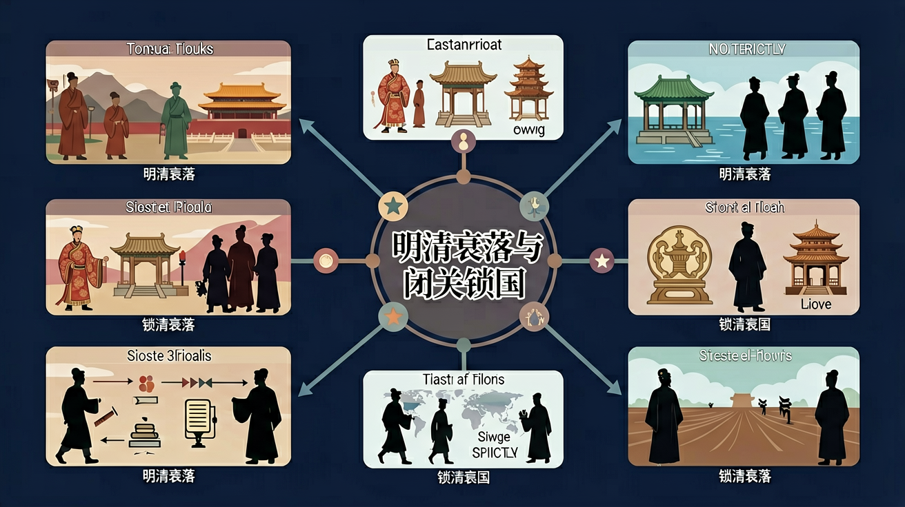

❓ 为什么清朝要闭关锁国，自己关起门来不难受吗？
❓ 课本说闭关锁国导致落后，那当时其他国家是怎么做的？
❓ 明朝和清朝的衰落原因一样吗？感觉都是皇帝不行？
学完这一课，这些问题你都能自信地回答。
🎯 能说出闭关锁国的3个具体表现
🎯 能分析明清衰落与西方崛起的2个关键对比点
🎯 能判断史料中反映闭关政策的典型现象
清朝闭关锁国政策的主要表现是？
明清时期导致白银外流的主要商品是？
明清衰落与闭关锁国是初中历史的重要内容。通过了解明清时期加强皇权的举措，初步认识君主专制带来的社会弊端；通过了解明清时期的经济改革和全球性经济互动，初步认识这一阶段中国经济发展的内因和外因。
通过郑和下西洋、戚继光抗倭等史事，了解明朝的对外关系；通过了解郑成功收复台湾、清朝在台湾的建制、册封达赖和班禅以及设置驻藏大臣等中央政权在边疆地区的各种举措，认识西藏地区、新疆地区、南海诸岛、台湾及其包括钓鱼岛在内的附属岛屿是中国的领土，理解统一多民族国家版图奠定的重要意义。
And：学生知道明清时期中国曾限制对外贸易
But：但不知道具体措施如何影响国家发展
Therefore：通过具体政策分析理解封闭的危害
清朝1757年颁布《防范外夷规条》，仅保留广州十三行一处通商口岸。外国商人必须通过特许商行交易，且不得学习中文、携带家属。例如英国马戛尔尼使团1793年带来蒸汽机等科技产品，乾隆皇帝却以'天朝物产丰盈'为由拒绝贸易请求，错失工业革命交流机会。
🌍 就像班级微信群突然设置'仅管理员可发言'，其他同学无法分享新知识，久而久之班级整体水平就会落后。
清朝闭关锁国最严重的表现是？
明清后期政治腐败、社会矛盾尖锐，面对西方殖民扩张仍以天朝上国自居，实行限制性对外政策，逐渐落后于世界潮流。认识衰落要联系内部危机与外部变局。
点击时代/图层按钮切换地图；悬停边界，点击城市标记查看说明。
将衰落原因拆解为政治/经济/科技三层面
用白银外流案例说明经济封闭后果
对比同期英国工业革命与清朝农业经济
观察广州十三行图片理解有限开放
用'信息茧房'类比闭关锁国的危害
复制提示词到 AI 学伴，生成「明清衰落与闭关锁国」的时间轴或事件提纲；也可以上传你手绘的示意图，请 AI 学伴点评。
复制后可粘贴到 AI 学伴继续对话。
答题写统治危机、财政军备、思想观念与世界形势变化。对比同时期西方殖民与工业革命进程。
常见误区：常见误区是把衰落只归因于一两次战争，忽视长期结构性问题。
闭关锁国政策的主要消极影响是？
以下哪项最能说明明清时期中国对外贸易的特点？
通过了解明清时期加强皇权的举措，初步认识君主专制带来的社会弊端；通过了解明清时期的经济改革和全球性经济互动，初步认识这一阶段中国经济发展的内因和外因。
把卡片拖到核心概念 / 方法技能 / 应用情境 / 常见误区。
拖完 4 项后自动判分。
探究明清时期中国对外贸易由盛转衰的原因及其影响。
先独立作答，再点选项查看对错与错因。
明清时期，中国对外贸易的主要商品不包括以下哪项？
以下哪项是清朝实施闭关锁国政策的主要原因？
鸦片战争后，清政府被迫开放的通商口岸不包括以下哪个城市？
清朝实施闭关锁国政策后，对外贸易仅限于____一口通商。
答案：广州
清朝实施闭关锁国政策后，对外贸易仅限于广州一口通商。
鸦片战争后，清政府被迫签订了____条约，开放了多个通商口岸。
答案：南京
鸦片战争后，清政府被迫签订了南京条约，开放了多个通商口岸。
（中考真题）下列哪项最能体现闭关政策对科技的影响？
若用手机信号比喻，闭关政策类似？
对比17世纪中英两国，根本差异在于？
✅ 广州十三行保留有限贸易通道
💡 教材强调'严格限制'而非'绝对禁止'
✅ 需结合小农经济局限性与制度僵化
💡 忽视结构性因素的分析
口诀：海禁严，科技缓，白银流走国力短
类比：像小区拆了大门快递柜，看似安全实则生活不便
复述本课两个核心概念的定义。
用本课方法分析一个新例子。
有同学认为：以为闭关锁国是完全不对外贸易 —— 请说明错在哪里。
有同学认为：将明清衰落简单归因于皇帝个人 —— 请说明错在哪里。
把还没弄明白的地方写下来问 AI 学伴。它会先帮你找到卡住的地方，再给你一个小小的提示，让你自己往前走一步。